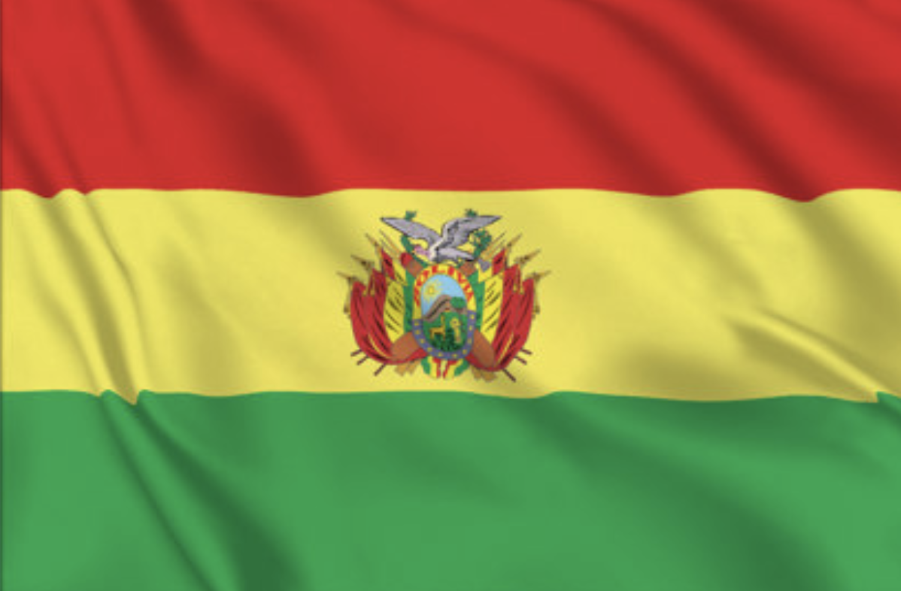

Roberto Uriona
About Me
Hi! I'm Roberto Uriona, from Cochabamba, Bolivia. I love spending time with my family and playing sports. I currently work as an automated quality assurance engineer, where I enjoy making sure software works as well as it should. In my free time, I like going on road trips and taking in the landscapes of my country and neighboring countries. To me, the best trip is one taken slowly, with good music and plenty of curiosity.
Cochabamba, Bolivia

Cochabamba is a city in central Bolivia, set in a broad valley surrounded by the Andes. Its mild climate and green landscapes have earned it the nickname “City of Eternal Spring.”
The city is also known for its rich food culture and welcoming atmosphere. One of its best-known landmarks is Cristo de la Concordia, a large statue overlooking the city from San Pedro Hill.
Web Dev Resources
Build responsive, accessible, and interactive web experiences.